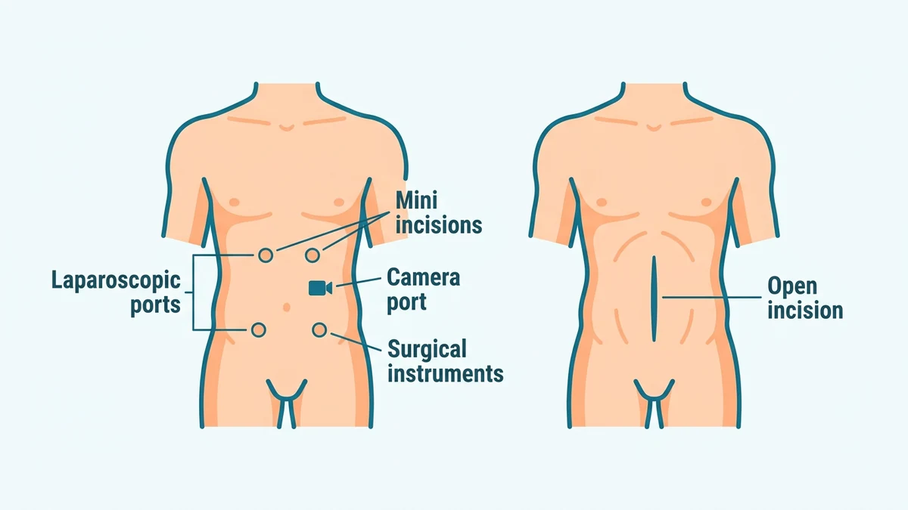
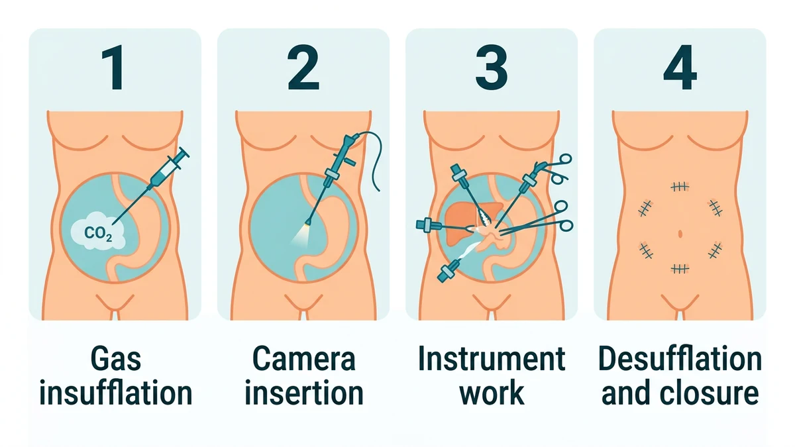

لاپاروسکوپی یا جراحی سوراخ کلید، روشی کمتهاجمی است که در آن جراح به جای یک برش بزرگ، از چند شکاف کوچک روی شکم ابزار باریک و دوربینی به نام لاپاروسکوپ را وارد میکند و عمل را با دیدن تصویر بزرگشده روی مانیتور انجام میدهد. این روش درد کمتر، خونریزی کمتر و دوران نقاهت کوتاهتری نسبت به جراحی باز دارد.
بیماران معمولاً تصور میکنند جراحی شکم حتماً یعنی یک برش بلند و هفتهها استراحت، در حالی که امروز بسیاری از همین عملها از شکافهایی به اندازهٔ یک سانتیمتر انجام میشوند. در این راهنما منطق و مسیر کامل لاپاروسکوپی را باز میکنیم. آمادگیهای پیش از عمل در مقالهٔ آمادگی قبل از جراحی لاپاروسکوپی و مراقبتهای پس از آن در مراقبتهای بعد از جراحی لاپاروسکوپی آمده است.
لاپاروسکوپ لولهٔ باریکی است که سر آن دوربین و منبع نور دارد و تصویر داخل شکم را با بزرگنمایی بالا به مانیتور اتاق عمل میفرستد. جراح ابزارهای بلند و ظریف را از شکافهای دیگر وارد میکند و در حالی که چشمش به مانیتور است، بافت را میگیرد، میبرد و میدوزد. چون دست جراح وارد شکم نمیشود، آسیب به بافتهای سالم به حداقل میرسد.
پیش از شروع کار، شکم با گاز بیخطر دیاکسید کربن کمی متورم میشود تا دیوارهٔ شکم از روده و اندامها فاصله بگیرد و فضای کار ایمن ایجاد شود. تفاوت ظاهری این روش با جراحی باز در شکل زیر نشان داده شده است.

دامنهٔ لاپاروسکوپی سال به سال گستردهتر شده است. شایعترین کاربردها عبارتاند از:
انتخاب روش به نوع بیماری، شدت التهاب، سابقهٔ جراحی شکم و شرایط بیمار بستگی دارد. جدول زیر تفاوتهای اصلی را نشان میدهد:
| ویژگی | لاپاروسکوپی (روش رایج) | جراحی باز |
|---|---|---|
| شکاف جراحی | چند شکاف کوچک حدود یک سانتیمتری | یک برش بلند روی شکم |
| درد و نقاهت | درد کمتر و بازگشت زودتر به فعالیت | درد بیشتر و دوران بهبود طولانیتر |
| دید جراح | تصویر بزرگنماییشده روی مانیتور | دید مستقیم از راه برش باز |
| کاربرد رایج | بیشتر جراحیهای انتخابی و پایدار | چسبندگی شدید، موارد پیچیده یا اورژانسی |
روال معمول لاپاروسکوپی از چهار گام اصلی تشکیل میشود:

این جراحی با بیهوشی عمومی انجام میشود، یعنی بیمار در تمام مدت خواب عمیق دارویی است، دردی حس نمیکند و چیزی به خاطر نمیآورد. جزئیات این فرایند در مقالهٔ بیهوشی عمومی چگونه است توضیح داده شده است. پس از عمل در اتاق ریکاوری علائم حیاتی پایش میشود و درد مبهم شکم یا درد انتشاری به شانه از گاز باقیمانده، شایع و گذراست.
اگر تیم جراحی در حین عمل با چسبندگی شدید از جراحیهای قبلی، التهاب پیچیده، خونریزی کنترلنشده یا آناتومی غیرمنتظره روبهرو شود، برای حفظ ایمنی بیمار روش را به جراحی باز تغییر میدهد. این تصمیم نشانهٔ شکست عمل نیست و از پیش در فرایند رضایت آگاهانه توضیح داده میشود؛ گاهی یک برش بزرگتر، انتخاب مسئولانهتری برای پایان ایمن عمل است.
این روش سابقهٔ ایمنی بالایی دارد، اما مانند هر جراحی دیگری عفونت زخم، خونریزی، آسیب به روده یا مجرای مجاور و عوارض بیهوشی بهندرت ممکن است. چکلیست ایمنی جراحی و پایش لحظهای تیم بیهوشی این خطرها را تا حد امکان پایین میآورد.
⚠️ پس از ترخیص، در صورت تب بالا، درد فزایندهٔ شکم با وجود مسکن، استفراغ مداوم، تورم و قرمزی محل پورتها، تنگی نفس، توقف کامل دفع گاز و مدفوع یا تورم یکطرفهٔ ساق پا منتظر نمانید و فوراً با جراح معالج تماس بگیرید یا با ۱۱۵ اورژانس را خبر کنید. همهٔ علائم نیازمند مراجعهٔ فوری در راهنمای علائم خطر بعد از عمل جمعبندی شدهاند.
لاپاروسکوپی یا جراحی سوراخ کلید، روشی کمتهاجمی است که در آن جراح به جای یک برش بزرگ، از چند شکاف کوچک روی شکم ابزار باریک و یک دوربین به نام لاپاروسکوپ را وارد میکند و عمل را با دیدن تصویر بزرگشده روی مانیتور انجام میدهد.
پیش از کار، شکم با گاز بیخطر دیاکسید کربن کمی متورم میشود تا دیوارهٔ شکم از اندامهای داخلی فاصله بگیرد و جراح فضای دید و کار کافی داشته باشد. این گاز در پایان عمل تخلیه میشود، اما مقدار کمی از آن ممکن است یک تا دو روز درد انتشاری به شانه ایجاد کند.
در لاپاروسکوپی به جای یک برش بزرگ، چند شکاف کوچک ایجاد میشود و دوربین دید دقیقتری میدهد؛ نتیجهاش درد کمتر، خونریزی کمتر، دوران نقاهت کوتاهتر و اسکار کوچکتر است. جراحی باز در شرایط پیچیده، چسبندگی شدید یا موارد اورژانسی همچنان ممکن است لازم شود.
این روش در جراحیهای کیسه صفرا، آپاندیس، فتق، بعضی جراحیهای زنان و لگن، برداشتن بخشی از روده و جراحیهای تشخیصی کاربرد دارد. هرچه تجهیزات و تجربهٔ تیم بیشتر شده، دامنهٔ این روش گسترش پیدا کرده است.
اگر در حین لاپاروسکوپی چسبندگی شدید، التهاب پیچیده، خونریزی کنترلنشده یا آناتومی غیرمنتظره دیده شود، تیم جراحی برای ایمنی بیمار روش را به جراحی باز تغییر میدهد. این تصمیم نشانهٔ شکست نیست و از پیش در رضایتنامه توضیح داده میشود.
این روش سابقهٔ ایمنی بالایی دارد، اما مانند هر جراحی دیگری عفونت زخم، خونریزی، آسیب به اندامهای مجاور یا عوارض مربوط به بیهوشی بهندرت ممکن است. تجربهٔ تیم جراحی و پایش استاندارد اتاق عمل این خطرها را تا حد امکان کم میکند.
دستور پزشک و پروتکل مرکز درمانی شما بر هر متن عمومی مقدم است.
این مقاله صرفاً جنبهی آموزش و اطلاعرسانی دارد و جایگزین تشخیص، مشاوره یا درمان پزشکی نیست.